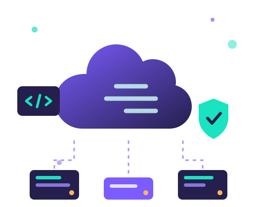
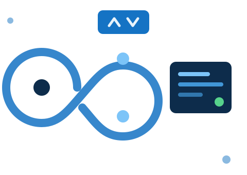
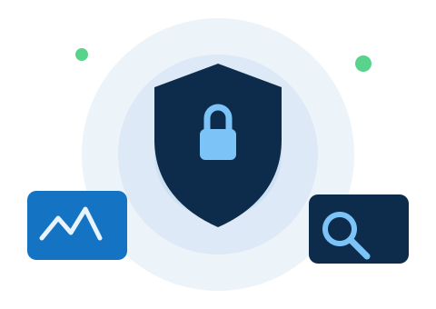
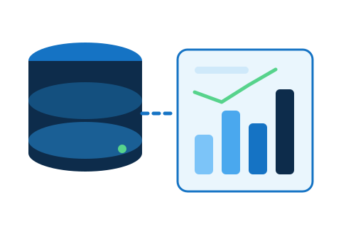

Nii Yartey Gidiglo
( Cloud · DevOps · Data Engineer )
Cloud Engineer with deep experience migrating enterprise workloads to Azure and AWS, deploying security solutions, and building CI/CD pipelines and data platforms that are scalable, fault-tolerant and cost-optimised.

8+Microsoft Azure certifications
50+Cloud migration projects delivered
20+Enterprise Sentinel deployments
70+IT professionals trained
What I Do
Designing, automating, securing and instrumenting cloud platforms - from the landing zone down to the data pipeline.
Cloud Infrastructure & Architecture
- Cloud adoption assessments using Microsoft's Cloud Adoption Framework, guiding clients through migration and deployment phases.
- Workload migrations to Azure PaaS and IaaS - on-premises, VMware/Hyper-V, AWS, GCP and OCI sources.
- Scalable, fault-tolerant architectures with high availability, BCDR and Azure Site Recovery.
- Hybrid connectivity with Site-to-Site VPN, VNet design, NSG hardening and cost rightsizing.

DevOps, IaC & Automation
- CI/CD pipelines in Azure DevOps that cut deployment times and keep integration consistent.
- Infrastructure provisioning automated with Terraform, Bicep and PowerShell, removing manual error.
- Containerised workloads with Docker and Kubernetes, plus workflow automation with n8n and Power Automate.
- Sprint planning and delivery tracking in Azure DevOps across distributed teams.

Cloud Security & Monitoring
- Microsoft Sentinel deployments with data connectors, analytics rules, workbooks and automation playbooks.
- Enterprise cloud security controls, risk assessments and compliance alignment (ISO/IEC 27001 & 42001 Lead Auditor).
- Key management policies with Azure Key Vault, IAM roles and MFA enforcement.
- Observability with Log Analytics, Azure Monitor, Prometheus and Datadog for reliability and reduced downtime.

Data, AI & Development
- ETL and data pipeline development that feeds analytics and business intelligence.
- Data cleaning, exploration and regression modelling in Python for decision support.
- Kubeflow pipeline components built and connected to automate data processing workflows.
- Web applications in JavaScript, React, Node.js and Python with SQL and Oracle backends.